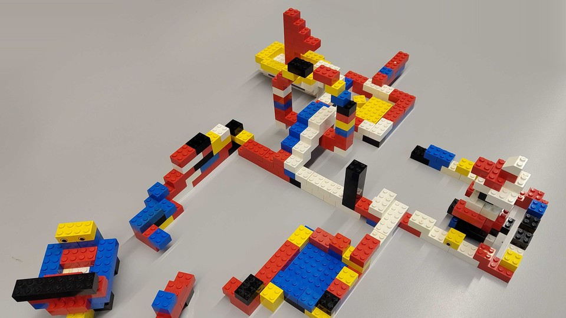

Lecture 7a · 09.11.2026
ASSE Reloaded: Welcome and Introduction
- The Interactions team and its research
- From software to systems: architecture characteristics and trade-offs
- Learning goals, the PlugFest, syllabus and exam style
Open slides →31 slides
Master in Computer Science
From insight to impact.
From software to systems: after the focus on individual components in the first half of the semester, the second half is about interactions between components and the trade-offs involved in designing these interfaces and interactions.
Lecture 7a · 09.11.2026
Open slides →31 slides

Lecture 7b · 09.11.2026
Open slides →86 slides

Lecture 8 · 16.11.2026
Open slides →45 slides
Lecture 8b · previous version
Open slides →65 slides

Lecture 9 · 23.11.2026
Open slides →97 slides

Lecture 10 · 30.11.2026
Open slides →56 slides

Lecture 11 · 07.12.2026
Open slides →41 slides
While presenting: ← → or Space to move, O overview, F full screen, N speaker notes. Print a deck from the browser for a PDF with one slide per page.